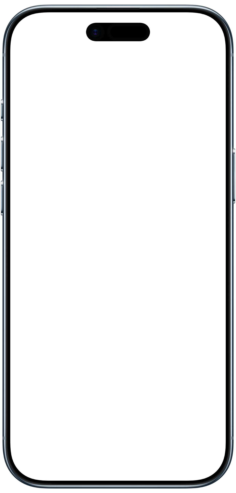
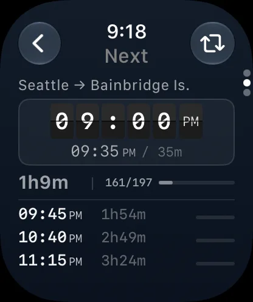
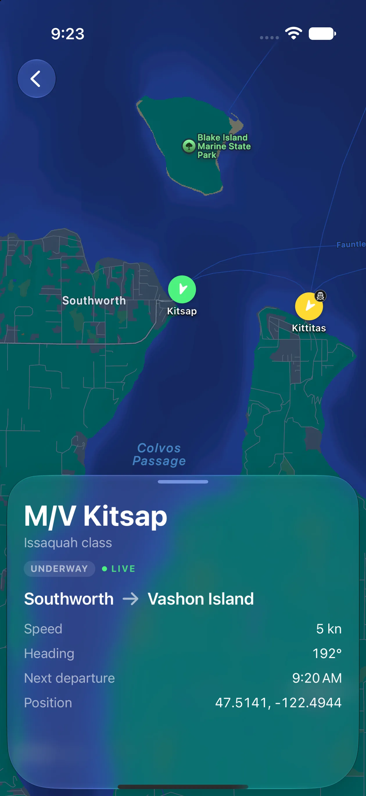
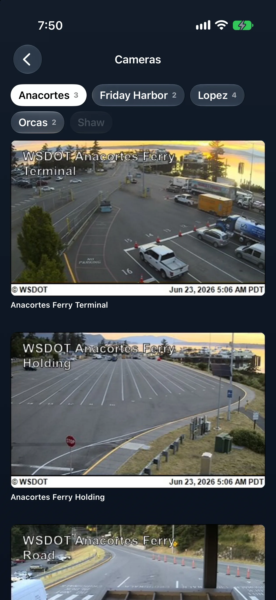
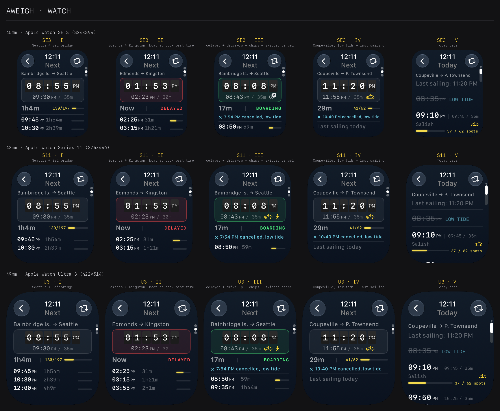

Aweigh.
Live departures for Washington State Ferries, built for iPhone and Apple Watch.
Download on the App Store
Watch and iPhone.
The next departure and vehicle capacity on your wrist. Full schedules, live vessels, cameras, and alerts on your phone.


Go further on iPhone.
Live vessel positions and terminal cameras for when the wrist isn't enough.

Ferry Map
Follow every vessel live, with its route, speed, heading, and latest position.

Cameras
See terminal holding areas before you leave home, grouped by the route and terminal they serve.
Test matrix
The happy path is only one case.
Aweigh's watch interface is tested across screen sizes and the situations ferry riders actually encounter: delays, cancellations, low tides, changing capacity, and the last sailing of the day.
